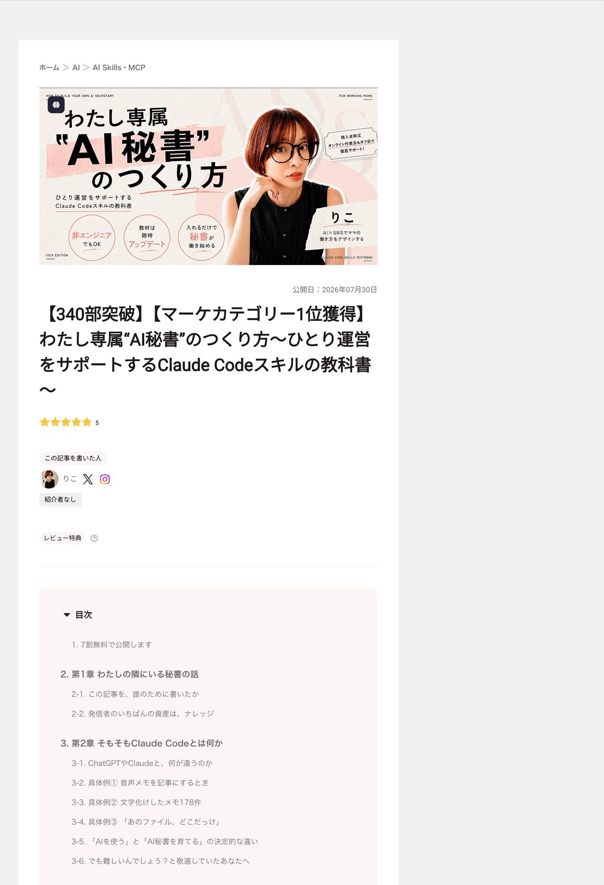
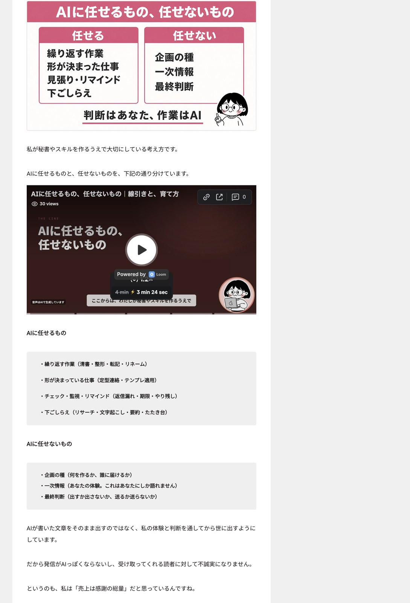

1
音声→記事下書き
音声ファイルを受け取る→文字起こし→本人の文体ルールで下書き→未完の印を付けて保存。配布版はファイル保存までで、公開先への自動送信は含みません。
人がナレッジを生み、AIが形にする。判断を手放さず、繰り返す作業を仕組みに変える教科書です。
原資料『わたし専属“AI秘書”のつくり方』（りこ、2026年7月30日公開）と付属の「秘書着任セット」を学習用に再構成しました。画面名・料金・提供条件は原資料の時点の説明です。

原資料が対象にするのは、教えたいことがあるのに、台本・資料・連絡・整理へ時間を取られている発信者や講師です。
判断はあなた、作業はAIAIが代わりに考えるという意味ではありません。本人でなくてもよい作業を任せ、ナレッジを生む時間を戻す考え方です。
PDF 第1章 p6–8、設計思想 p45–46
文章を考える。質問へ答える。保存や整理は人が行う。
フォルダを調べ、ファイルを作り、名前をつけ、決めた場所へ保存する。
チャットでは、音声を文字にする、貼る、下書きを作る、文体を直す、名づける、保存する工程を人がつなぐ。
Codeの例では、指定フォルダへ音声を置いた後の処理を一続きにします。
フォルダを調べ、文字化けの型を見つけ、同じ処理をまとめて行う例。原著者は、手作業なら一日かかる量を15分で直したと記しています。
覚えている場所は、会話の外原資料は、チャットの記憶に頼るのではなく、仕事の手順や決定をファイルへ書き、次の会話で読み直す仕組みを重視します。
PDF 第2章 p9–16
何の仕事か
いつ、何が起きたら
何を、どの順で
どこへ、どんな形で
触らない・送らない
文体、保存場所、禁止事項など、どの仕事にも効かせたい約束。
頼まれた用件を見て、説明文に合うマニュアルを選ぶ。
毎回の説明を減らす。きっかけ・順番・完成形・禁止を固定する。
過去の文章や資料から、文体・色・世界観・好みを言葉にする。
時刻を書くだけでは自動で動かない原資料は、決まった時刻に動かすには別の設定が必要だと説明しています。
PDF 第3章 p16–19、第6章 p33–34
原資料はデスクトップアプリを使う初心者向けの手順です。画面名が変わる可能性も本文に書かれています。
「このフォルダに何を置くか決めたい。必要な情報を質問して」と頼む。媒体・発信内容・時間を取られる作業へ答え、フォルダ案を作ってもらう。
決まった構成、命名、執務室の使い方はメモへ残す。ここまでで「日本語で頼む→秘書が手を動かす」という基本を体験します。
原資料は、エラー文をそのままAIへ渡し、意味と直し方を聞く方法を案内しています。
ボタン名や場所が変わった場合も、見えている画面に合う追加手順を尋ねるとしています。
SKILL.mdを含む配布フォルダを、ZIPの形で受け取る。
原資料では「カスタマイズ」から追加し、ZIPを選ぶ。
いきなり大量処理にせず、数件で完成形を確かめる。
自分との違いを直し、次からのルールとして残す。
そのまま完成品とは考えず、自分の仕事に合わせて書き換える出発点にする。
仕事を決める→5項目を書く→ファイル化を頼む→動かす→違う所へ赤入れ、の順です。
PDF 第4章 p20–26、第5章 p27–32
投稿・送信・公開は確認待ちまで。
元ファイルを残し、コピーへ作業。
目安を示し、少量で試す。
鍵やトークンを本文へ直書きしない。
一括処理の前に、数件で確認。
できない・分からないを正直に言う。
本文の3原則を、付属ファイルが具体化本文は「少しだけ試す」「元を消さない」「勝手に外へ出さない」。付属のsafety.mdは課金・秘密・エラーも加えています。
PDF p32、付属 `safety.md`

PDF 第7章 p35–39、第8章 p45–46
「なるべく早く」を「48時間」に変える。一度知らせて終わらず、対応が終わるまで毎日出す。
体験談を大げさに書いた失敗から、「涙の演出を盛りすぎない」とルールへ追加した。
PDF 第8章 p45–47
「いい感じに記事にして」。完成形・保存場所・禁止事項が見えない。
きっかけ、文字起こし、保存先、命名、文体ルール、下書きの保存先まで順に伝える。
取り消せない操作の前に、小さく試す原資料の送信例では、送り先確認→文面の確認→自分の部屋へ1通→確認後に残り、の順でした。
PDF 第9章 p48–49
音声ファイルを受け取る→文字起こし→本人の文体ルールで下書き→未完の印を付けて保存。配布版はファイル保存までで、公開先への自動送信は含みません。
今日やること、期限切れ、48時間止まった返信待ちを、決まった型で毎朝まとめる。時刻どおりに自動で動かすには、スキルとは別の設定が必要です。
命名ルールに沿って名前を直し、月別へ分け、未完の一覧を作る。全件を動かす前に3件だけ試し、並びと名前を確認してから残りへ進みます。
過去のメルマガ・記事・投稿を読み、文体ルールをファイルへ。原著者の例はメルマガ571通。完全再現ではなく、下書きの手直しを減らす仕事です。
初回に画像・色・雰囲気を確認。シンプル、やわらか、上質な明朝体、手書き感の4種から選び、16:9で作ります。
受取はHTML・PPTファイル・デザイン用指示の3方式。原資料はKeynoteとGoogleスライドの直接出力を対象外にしています。
質問へ答えると、コンセプト、対象、違い、1メッセージ、プロフィール3案を設計表へ。保存した表は、後続の投稿・台本レシピが参照します。
ゼロから作る／既存台本を直すの2モード。冒頭2秒のフック、話の展開、画面に出す文字の密度を、原資料の型に沿って診断します。
教材から話し言葉の台本と図解へ。Lv1は台本＋図解、Lv2は外部サービスのAI音声、Lv3は動画ファイル化まで。
費用はLv2前に知らせ、声の複製は本人の声か、書面で許可を得た声だけという条件です。
受講者の質問ログを渡し、FAQと回答の型へ整理。同じ質問へ毎回ゼロから答えず、次の回答で参照できる形へ残します。
クラウド録画→限定公開→文字起こしを待つ→資料→受講者への案内を組む手順書。原資料は、初回に約1時間の設定と、録画・動画サービスの接続情報が要ると説明します。
質問と教材・過去回答を照合し、回答の下書きまで。自動返信は作らず、送信は人が行うという境界です。
ローカル台帳で返信待ちを管理。48時間以上止まった項目を、完了するまで毎朝再掲します。常駐botを前提にしない形です。
①毎日の面倒を出す ②AIに任せられるか分ける ③5項目の指示書へ赤入れする ④スキルファイルにする。自分の仕事を増やすためのレシピです。
13レシピを一人の秘書へまとめ、壁打ち・提案・構築の進め方も含める。
必要な仕事だけを独立したスキルとして使う。フル版へ移るときは個別版を外す設計。
質問→構成の確認→画像→スマホ向け単一HTMLまでを扱う、別立てのスキル。
13番が、仕事を増やす入口原資料は、最初の12本を固定した完成品ではなく、各自の「面倒」を新しい仕事へ変える土台として位置づけています。
PDF 第10章 p49–56、第11章 p56–57
付属セットには、全体の役割、安全規則、初回面談の進め方、秘書メモの雛形が入っています。
役割を伝え、3〜4問だけ聞く。何ができるか分からない人へ丸投げしない。
発信分野、媒体、時間を取る作業、秘書の呼び方。選択肢も使う。
必要な5〜7フォルダだけ。作る前に案を見せ、了承を待つ。
実物を作り、一覧を見せ、決定を秘書メモへ残す。
メモがあれば最初に読む。
前回決めた内容を2〜3行で言い直してから、その日の用件を聞く。
これが「一度教えた内容を、次の仕事へつなぐ」仕組みです。
付属 SKILL.md、recipes/onboarding.md、recipes/assets/secretary_memo_template.md、はじめにお読みください.md
本体の利用料に加え、文字起こし・音声などで別の従量課金があり得る。原著者は外注費と比べる考え方を示しています。
録画処理にはクラウド録画、音声生成には外部サービスなど、仕事ごとに条件が違う。決まった時刻の実行も別設定です。
最初から完璧には動かない。無料部分から一つずつ作る道と、13本へ赤入れして始める道が示されています。
原資料の手順を使い、任せる仕事を決め、最初のスキルを作って直していく。原著者自身は当時、現在の形を作るまで2〜3週間ほぼ毎日使ったと記しています。
初日から13本の指示書を使い、ゼロから書く代わりに「自分の仕事ではどこが違うか」を赤入れします。
各スキルが何を、どこまで行うかを先に確認。
最初に聞かれる内容を動画で見ておく。
原著者の操作と指示の例を見る。
よく止まる場所を見てから使い始める。
PDFは各スキルに解説動画があると案内。付属txtには3件の動画URLがあります。
フル版・個別版・LPメーカー、動画、導入手順、更新を一か所に置く構成です。
PDF公開時点では、質問用の場、全3回のオンライン作業会、対面の作業会を案内していました。
デスクトップアプリ、チャット、Code、デザイン、予定機能を扱う録画として紹介されています。
5問または既存の設計表→4週間の流れを確認→日付・媒体・分類・題材・冒頭案・次の行動（CTA）の表→毎朝その日の案、という4段階です。
案内の状態は原資料の公開時点料金、提供条件、開催日、画面名は変わる可能性があります。ここでは当時の教材構成として整理しています。
PDF 第7章 p35–39、追加案内 p40–41、第12–13章 p57–58、購入者案内 p59、付属txt 3件